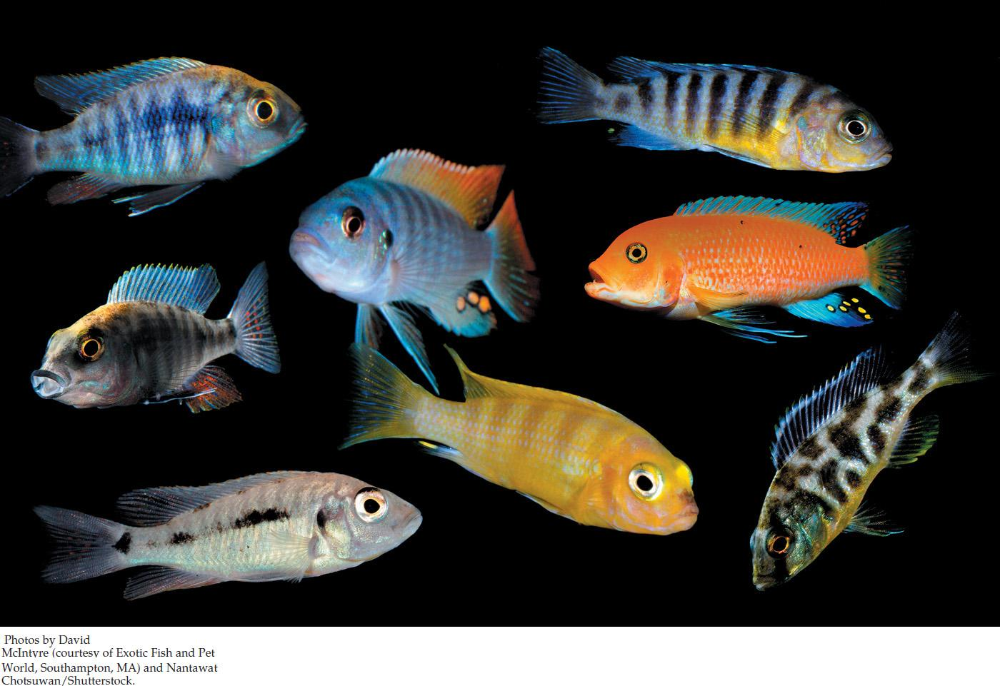

| 17 | Speciation |
|

This composite photograph shows several of the hundreds of species of diverse haplochromine cichlids that are endemic to Lake Malawi.
|
Not quite 2 million years ago, a tectonic split in the Great Rift Valley of East Africa led to the formation of Lake Malawi, which lies between the modern countries of Malawi, Tanzania, and Mozambique. A few fish species entered the new lake, including a type known as a haplochromine cichlid. Today the descendants of this early colonizer include nearly 1,000 species of haplochromine cichlids. All of them are endemic to Lake Malawi—they are found nowhere else. This vast array of cichlid species makes this the most diverse lake in the world in terms of its fish community. How did so many different species arise from a single ancestral species in less than 2 million years?
As we noted in Chapter 16, speciation is the process that produces the splits among lineages in the tree of life. Biologists have studied the history and timing of speciation events in Lake Malawi and have pieced together some of the processes that led to so many cichlid species. The earliest haplochromine cichlids to enter the new lake encountered diverse habitats in Lake Malawi, as some shores were rocky and others were sandy. Cichlid populations quickly adapted to these distinct habitat types. Fish in rocky habitats adapted to breeding and living in rocky conditions, and those in sandy habitats evolved specializations for life over sand. These changes resulted in an early speciation event.
Within each of these major habitat types, there were numerous opportunities for diet specialization. Various populations of cichlids became rock scrapers, bottom feeders, fish predators, scale biters, pelagic zooplankton eaters, and plant specialists. Each of these feeding specializations requires a different mouth morphology. The offspring of fish that bred with fish of similar morphology were more likely to survive than were fish with two very different parents. These differences in fitness led to the formation of many more new species, each adapted to a different feeding mode.
But still the Lake Malawi cichlids continued to diverge and form new species. Male cichlids compete for the attention of females through their bright body colors. Diversification of the body colors of males, and of the preferences of females for different body colors, led to many more new species of cichlids, each isolated from the other by their sexual preferences. Now biologists are studying the genomes of these Lake Malawi cichlids to understand the details of the genetic changes that have given rise to so many species over so little time.
Can biologists study the process of speciation in the laboratory?